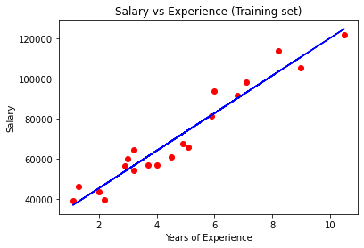
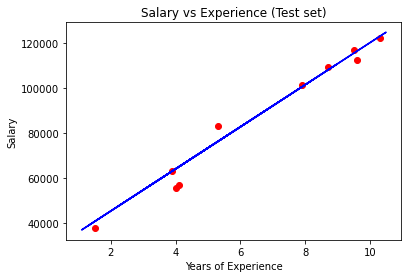
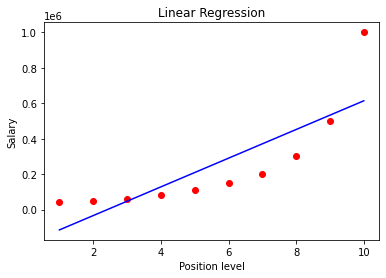

Régression Linéaire Simple, Multiple et Polynomiale avec Scikit-Learn
Régression Linéaire Simple¶
1. Importez les bibliothéques necessaires¶
import numpy as np
import matplotlib.pyplot as plt
import pandas as pd
from sklearn.metrics import mean_squared_error, mean_absolute_error
2. Importez le jeu de données ‘Salaire_Experience.csv’¶
dataset = pd.read_csv('Salaire_Experience.csv')
3. Notre variable target (Y) est le salaire, Récuprer X et Y à partir du jeu de données¶
X = dataset.iloc[:, :-1].values
y = dataset.iloc[:, 1].values
4. Fractionnement le jeu de données en jeu d’entraînement et jeu de test (20% pour le test)¶
from sklearn.model_selection import train_test_split
X_train, X_test, y_train, y_test = train_test_split(X, y, test_size = 1/3, random_state = 0)
5. Créer votre modèle LinearRegression et entraînez le sur les données d’entraînement¶
from sklearn.linear_model import LinearRegression
regressor = LinearRegression()
regressor.fit(X_train, y_train)
LinearRegression()
6. Predire les résultats du modèle sur l’ensemble du test¶
# Predicting the Test set results
y_pred = regressor.predict(X_test)
7. Visualisation des résultats du modèle sur les données d’entraînement¶
plt.scatter(X_train, y_train, color = 'red')
plt.plot(X_train, regressor.predict(X_train), color = 'blue')
plt.title('Salary vs Experience (Training set)')
plt.xlabel('Years of Experience')
plt.ylabel('Salary')
plt.show()

8. Visualisation des résultats du modèle sur les données de test¶
plt.scatter(X_test, y_test, color = 'red')
plt.plot(X_train, regressor.predict(X_train), color = 'blue')
plt.title('Salary vs Experience (Test set)')
plt.xlabel('Years of Experience')
plt.ylabel('Salary')
plt.show()

9. Evaluez votre modèle par le mean_squared_error et mean_absolute_error¶
mse = mean_squared_error(y_test, y_pred)
mae = mean_absolute_error(y_test, y_pred)
print(mse)
print(mae)
21026037.329511296
3426.4269374307123
Régression Linéaire Multiple¶
1. Importez le jeu de données ‘Startups.csv’¶
dataset = pd.read_csv('Startups.csv')
2. Notre variable target (Y) est le profit, Récuprer X et Y à partir du jeu de données¶
X = dataset.iloc[:, :-1].values
y = dataset.iloc[:, 4].values
print(X.shape)
(50, 4)
3. Encoder les variables qualitatives¶
from sklearn.preprocessing import LabelEncoder, OneHotEncoder
labelencoder = LabelEncoder()
X[:, 3] = labelencoder.fit_transform(X[:, 3])
print(X[:, 3])
[2 0 1 2 1 2 0 1 2 0 1 0 1 0 1 2 0 2 1 2 0 2 1 1 2 0 1 2 1 2 1 2 0 1 0 2 1
0 2 0 0 1 0 2 0 2 1 0 2 0]
4. Fractionnement le jeu de données en jeu d’entraînement et jeu de test (20% pour le test)¶
from sklearn.model_selection import train_test_split
X_train, X_test, y_train, y_test = train_test_split(X, y, test_size = 0.2, random_state = 0)
---------------------------------------------------------------------------
NameError Traceback (most recent call last)
<ipython-input-1-0e94af6cdca3> in <module>
1 from sklearn.model_selection import train_test_split
----> 2 X_train, X_test, y_train, y_test = train_test_split(X, y, test_size = 0.2, random_state = 0)
3
4 print("X train set :", X_train.shape)
5 print("X test set :", X_test.shape)
NameError: name 'X' is not defined
5. Standariser les variables d’entrainement et de test¶
from sklearn.preprocessing import StandardScaler
sc_X = StandardScaler()
X_train = sc_X.fit_transform(X_train)
X_test = sc_X.transform(X_test)
# sc_y = StandardScaler()
# y_train = sc_y.fit_transform(y_train)
6. Créer votre modèle LinearRegression multiple et entraînez le sur les données d’entraînement¶
from sklearn.linear_model import LinearRegression
regressor = LinearRegression()
regressor.fit(X_train, y_train)
LinearRegression()
7. Predire les résultats du modèle sur l’ensemble du test¶
y_pred_train = regressor.predict(X_train)
y_pred_test = regressor.predict(X_test)
8. Visualisation des résultats du modèle sur les données d’entraînement en 3D avec les deux variable R&D Spend et Marketing Spend¶
# from mpl_toolkits.mplot3d import Axes3D
# %matplotlib notebook
# fig= plt.figure()
# ax=fig.add_subplot(111,projection='3d')
# plt.xlabel("X_train[:,0]")
# plt.ylabel("y_train")
# ax.scatter(X_train[:,0],X_train[:,2],y_train)
# ax.scatter(X_train[:,0],X_train[:,2],y_pred_train,color = 'yellow')
9. Visualisation des résultats du modèle sur les données de test en 3D avec les deux variable R&D Spend et Marketing Spend¶
# from mpl_toolkits.mplot3d import Axes3D
# %matplotlib notebook
# fig= plt.figure()
# ax=fig.add_subplot(111,projection='3d')
# plt.xlabel("X_test[:,0]")
# plt.ylabel("y_test")
# ax.scatter(X_test[:,0],X_test[:,2],y_test)
# ax.scatter(X_test[:,0],X_test[:,2],y_pred_test,color = 'yellow')
10. Evaluez votre modèle par le mean_squared_error¶
mse2 = mean_squared_error(y_test, y_pred_test)
print(mse2)
78413822.17201339
Régression Polynomiale¶
1. Importez le jeu de données ‘Salaire_Level.csv’¶
dataset = pd.read_csv('Salaire_Level.csv')
---------------------------------------------------------------------------
NameError Traceback (most recent call last)
<ipython-input-2-3832909f0143> in <module>
----> 1 dataset = pd.read_csv('Salaire_Level.csv')
NameError: name 'pd' is not defined
2. Notre variable target (Y) est le salaire, Récuprer X et Y à partir du jeu de données¶
X = dataset.iloc[:, 1:2].values
y = dataset.iloc[:, 2].values
3. Créer votre modèle LinearRegression et entraînez le sur le jeu de données¶
from sklearn.linear_model import LinearRegression
lin_reg = LinearRegression()
lin_reg.fit(X, y)
LinearRegression()
4. Visualisation des résultats du modèle LinearRegression sur le jeu de données¶
# Visualising the Linear Regression results
plt.scatter(X, y, color = 'red')
plt.plot(X, lin_reg.predict(X), color = 'blue')
plt.title('Linear Regression')
plt.xlabel('Position level')
plt.ylabel('Salary')
plt.show()

5. Créer votre modèle Regression polynomiale et entraînez le sur le jeu de données, essayer avec différentes valeurs pour le degré (1..5). Visualiser dans la même figure les rélutats du modèle pour les différents degrés. Quelle est la meilleure valeur pour le degré ?¶
from sklearn.preprocessing import PolynomialFeatures
colors=['blue','yellow','green','pink','black']
plt.scatter(X, y, color = 'red')
print(X)
print(y)
plt.title('Polynomial Regression')
plt.xlabel('Position level')
plt.ylabel('Salary')
for i in range(1,5):
poly_reg = PolynomialFeatures(degree = i)
X_poly = poly_reg.fit_transform(X)
poly_reg.fit(X_poly, y)
lin_reg_2 = LinearRegression()
lin_reg_2.fit(X_poly, y)
plt.plot(X, lin_reg_2.predict(poly_reg.fit_transform(X)), color = colors[i-1],label='degre: %s' %i)
plt.legend()
plt.show()
[[ 1]
[ 2]
[ 3]
[ 4]
[ 5]
[ 6]
[ 7]
[ 8]
[ 9]
[10]]
[ 45000 50000 60000 80000 110000 150000 200000 300000 500000
1000000]
6. Faire la prédiction de la valeur 6 avec le modèle de régression linéaire simple et de régression polynomiale, qu’est ce que vous remarquez ?¶
valeur=np.array([6]).reshape(-1, 1)
# Predicting a new result with Linear Regression
print('Predicting a new result with Linear Regression')
print(lin_reg.predict(valeur))
print("=========================================================")
# Predicting a new result with Polynomial Regression
print('Predicting a new result with Polynomial Regression')
print(lin_reg_2.predict(poly_reg.fit_transform(valeur)))
Predicting a new result with Linear Regression
[289939.39393939]
=========================================================
Predicting a new result with Polynomial Regression
[143275.05827508]